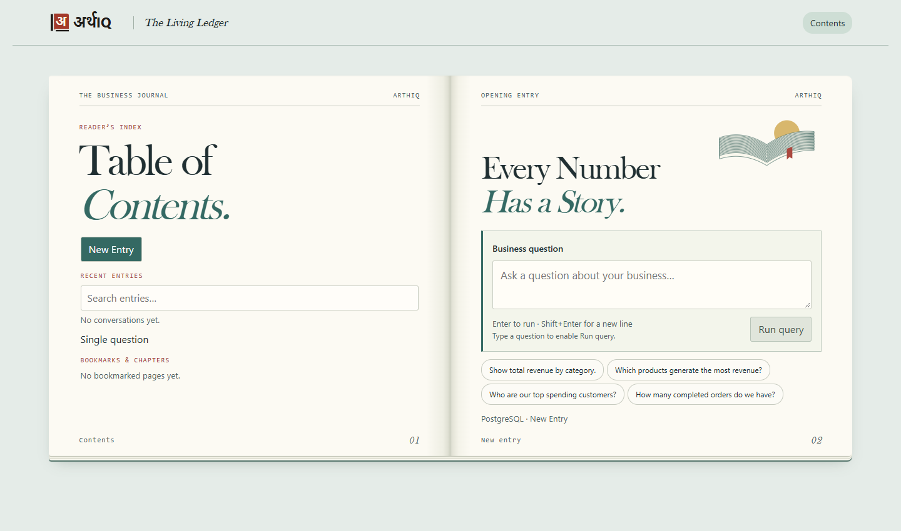

Your Data Has
a Story.
Ask ArthIQ.
Conversational business intelligence that turns a question into traceable SQL, visual analysis and a page worth keeping.

Ask in plain language.
Read the evidence.
A revenue question can require finding the right tables, tracing joins and deciding which orders count. ArthIQ retrieves the relevant schema and metric definition, proposes SQL and shows the database result alongside the exact statement behind it.
Workspace in action
Application captures from the browser acceptance suite, using test fixtures.
From question to query
Follow the path of one analytical request. Select a stage to inspect its role.
InterfaceReact · TypeScript · Vite
ServicePython · FastAPI
Retrieval & generationSentenceTransformers · Qdrant · Groq
ExecutionSQLGlot · PostgreSQL
The Olist ledger
Imported Brazilian e-commerce records across nine PostgreSQL tables with six enforced foreign keys.
Live baseline answers matched independently executed reference SQL, including delivered merchandise value in BRL.
Read the comparisons ↗Approximate correct answers in owner-reported manual exploratory testing. This set has no independently reproduced scoring protocol.
Behind the numbers
Schema and SQL boundaries
Hybrid retrieval combines semantic matches with identifiers and business terms. Verified foreign keys expand join paths. SQLGlot checks the SELECT grammar and table allowlist before a bounded read-only transaction.
Two datasets, distinct definitions
Demo Shop and Olist have dedicated reader connections, schema contexts and vector namespaces. Demo revenue uses completed orders in USD. Olist delivered merchandise value sums delivered item prices in BRL.
Follow-ups and historical results
Conversational follow-ups retain analytical context. Bookmarks preserve an exact run. Chapters freeze selected analyses in conversation order, with their SQL, timestamps and bounded results.
Open your own ledger.
This static portfolio runs independently. For live queries, set up PostgreSQL, install the Python and frontend dependencies, configure local reader credentials and a Groq key, then start FastAPI and Vite.
Read the local setup guide ↗